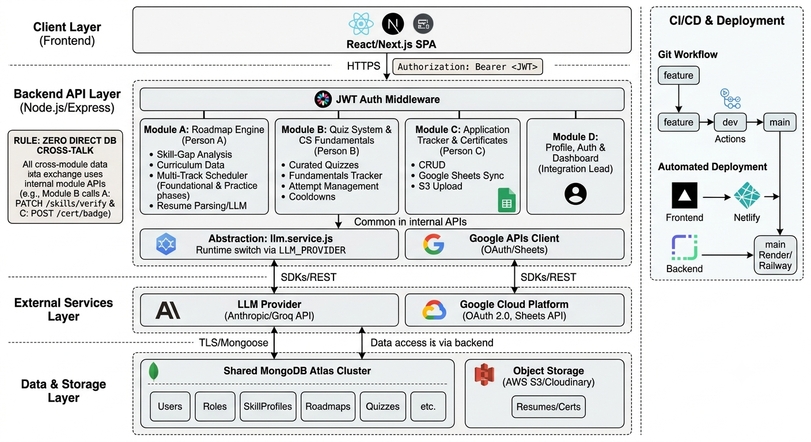

Most developer roadmap tools solve half the problem.Sites like roadmap.sh give you a comprehensive, well-sequenced list of what to learn — but it's the same list for everyone, tracked with nothing more than a checkbox. There's no adjustment for what you already know, no accounting for how much time you actually have per day, and nothing confirming you actually learned a topic to a working standard rather than just marking it done.
MileStone was built to close that gap. It's a four-person team project combining a personalized, day-wise learning roadmap, quiz-gated skill verification, an internship application tracker, and a CS-fundamentals tracker with a certificate vault — one integrated platform instead of the usual mix of a spreadsheet, a static roadmap site, and no real verification.
I owned The Roadmap Engine: turning a target role and a skill gap into an actual day-by-day plan that adapts as a student's real progress comes in. This post focuses there, since that's the part I can speak to in real technical depth.

Grounding the curriculum in reality, not LLM guesswork
Before any scheduling logic could matter, the content itself had to be right. Rather than asking an LLM to freely invent what a topic like "System Design Basics" should cover, each role's curriculum went through a sourced research process:
- Scanned 15–20+ real job/internship postings per role to see what's actually required
- Cross-referenced sequencing against roadmap.sh's core/supplementary classification
- Ran a dedicated pass through GeeksforGeeks, InterviewBit, and Glassdoor specifically to catch the niche-but-frequently-asked details standard coursework tends to skip — DBMS courses, for example, usually cover transaction isolation levels in the abstract but skip the specific named phenomena (dirty reads, non-repeatable reads, phantom reads) interviewers actually probe for
- Broke every topic into ordered subtopics, each tagged with an estimated time, a type (practical vs. conceptual), a source category, and a concrete practice prompt
That produced three fully-researched role curriculums — Data Analyst (14 topics), Software Developer (20 topics), AI Engineer (18 topics) — as real seed content, not AI filler. A later pass added a quizEligible flag per topic, and deliberately didn't default everything to quiz-eligible — trivia-heavy or discussion-shaped topics like Git or AI Safety & Ethics got set to false after reasoning about what's actually fair to test in MCQ format.
Skill-gap analysis: beyond a checkbox
The gap analysis started as a simple set-difference — known skills vs. required skills. That was too blunt. It evolved to respect proficiency levels: a self-reported "beginner" isn't enough to exclude a topic from the gap; only "intermediate"/"advanced" or actual quiz-verification does. I also added a prerequisite-consistency check — flagging (advisory, not blocking) inconsistencies like claiming advanced Scikit-learn while never mentioning Pandas. It only checks direct prerequisites, not the full transitive chain — a scope limit I made deliberately rather than by accident.
The scheduler: three real iterations
This is where most of the engineering actually happened, and it's the part I'm most glad I didn't ship as v1.
v1
A fixed 3-track cap, fixed 45-minute task chunks, and the whole roadmap pre-generated upfront in one shot.
v2 — rolling-window redesign
Instead of pre-generating everything, it computes "what's next" fresh from real completion data on every fetch. This became necessary once it was clear a pre-generated plan couldn't handle something as basic as a student skipping a day's task.
v3 — current
This is where the real adaptivity lives:
- Adaptive track cap — derived from
dailyMinutes / 20(floored at 1, capped at 4) instead of a hardcoded number, so someone with 30 minutes a day isn't handed a 4-topic-wide daily plan. daysPerWeekactually respected — the scheduler works out which real weekdays count as study days and skips the rest. My first attempt used an "evenly spaced" distribution algorithm, and its own test caught it scheduling a supposed 5-day week onto a Saturday — fixed to a simpler consecutive-from-Monday approach.- Subtopic-level chunking using each outline point's real
estimatedMinutes, not a fixed block size. - Partial-progress persistence — if a conceptual chunk gets split across days, its remaining minutes are computed from real completion history summed across all stored tasks sharing that key, rather than resetting to full duration next time it's scheduled.
- Strict one-day-gap prerequisites — a topic only unlocks once its prerequisites were completed on a strictly earlier day, never the same day.
- Smarter cross-track gating — if a track's next topic is locked, the scheduler looks further ahead in that same track for something else that's unlocked, instead of leaving the whole track idle for the day.
- Two phases — a finite "Foundational" phase (walks the real researched curriculum, typically 4–8 weeks) followed by an open-ended "Practice & Mastery" phase that rotates practice content to fill out a realistic multi-month timeline. This resolved a real tension: a roadmap is supposed to span 6–8 months, but there's only about 10 hours of authored curriculum content per role.
Rollover: making "skip a day" actually work
The subtlest bug lived here. An early version generated and permanently stored a full 14-day window upfront — so skipping a task didn't reschedule anything; the pre-committed future days stayed exactly as originally planned regardless of what actually happened.
The fix splits days into past (date < today, immutable, never rewritten) and non-past (recomputed as needed). On every GET /roadmap/:userId, the engine checks whether any past day has an incomplete task. If so, it discards the stored non-past days and regenerates from today using real completion data — the skipped task naturally reappears first, and everything else shifts later. If nothing needs to roll over, it falls back to a lighter "extend if running low" check, or does nothing — a fast path that avoids burning an LLM call when nothing's changed.
I verified this end-to-end against the real database, not just synthetically: manually pushed a task into the past with status: "not_started", and confirmed it reappeared correctly as the first task of the newly-computed "today," with buffer days recalculated and total roadmap length grown to absorb the delay.
Resume parsing, with a safety net
Resumes go through PDF/DOCX text extraction (worth noting: pinned to pdf-parse@1.1.1 specifically, since a plain install grabs an incompatible v2 API), then a constrained LLM call that has to match extracted skills against the role's real topic IDs. There's a defensive filter that drops any topic ID the LLM hallucinates that isn't actually one of the role's real topics — I tested this explicitly by simulating a hallucinated response to confirm the filter actually catches it, rather than assuming it would.
Keeping the LLM on a leash
All LLM calls route through one provider-agnostic wrapper (llm.service.js) — no other file talks to a provider SDK directly. It ships with a functional mock mode I used throughout early development, and a real Groq implementation (openai/gpt-oss-120b, chosen for structured-output support and context window size) wired in once a provider was picked.
Task wording is generated once per day, not once per task — all of a day's chunks get worded together in one call for a coherent daily plan and fewer API calls. The LLM is constrained to sequencing/wording only; it never decides curriculum content, since that's already been researched and fixed in the seed data. If a response comes back missing, malformed, or without a chunk's key, that specific chunk falls back to its raw outline text instead of failing the whole day — again tested explicitly with a deliberately broken response.
What testing actually caught
Every non-trivial piece got a real, runnable test before I called it done — not just a read-through. That process caught three bugs that would've been ugly to find later:
- An infinite loop in the duration-estimate function: a topic with a prerequisite could never "complete" within a dry-run simulation, because the completion map wasn't being updated as the simulation progressed.
- The
daysPerWeekeven-spacing bug mentioned above. - A silent data-loss bug — deriving the topic list by scanning stored tasks would have permanently dropped any topic not yet reached in the first generated window. Fixed by persisting
gapTopicIdsdirectly on theRoadmapdocument instead of trying to re-derive it.
None of these were things I'd have caught by just reading the code back.